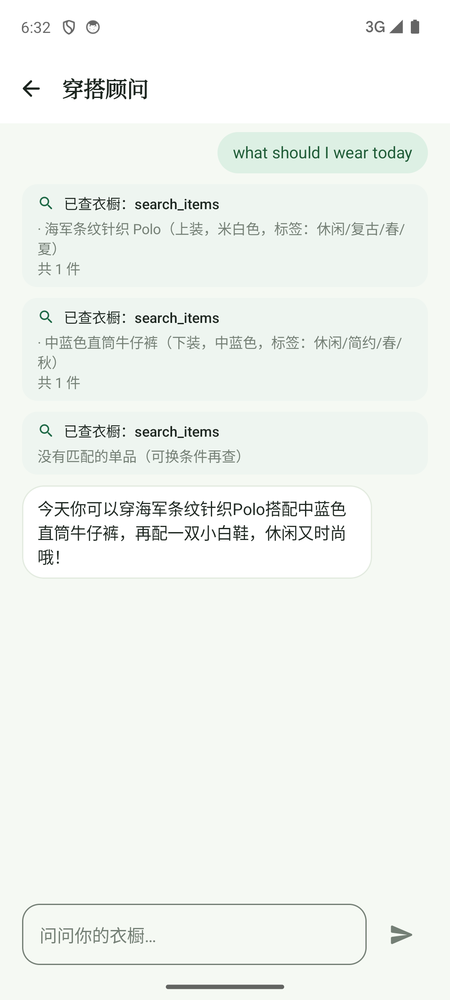
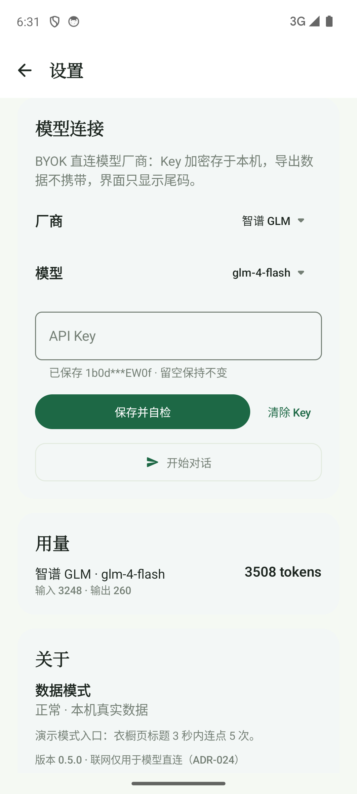
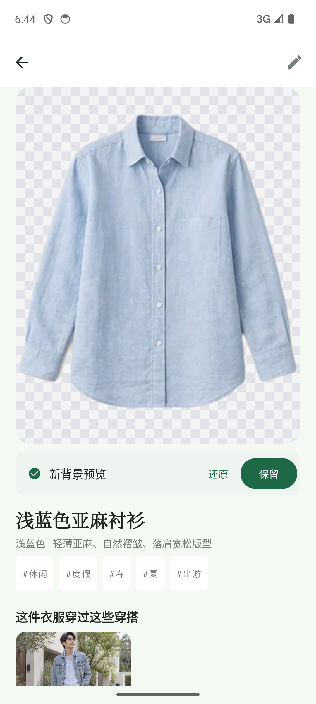
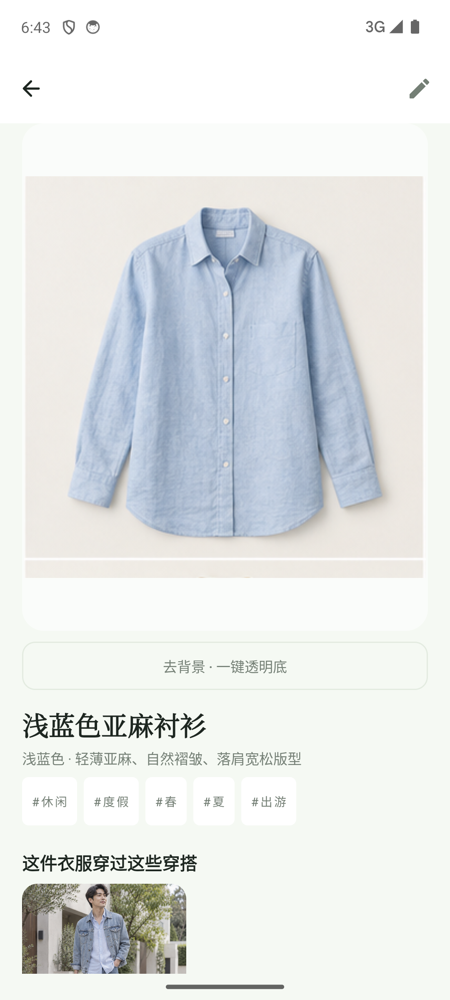
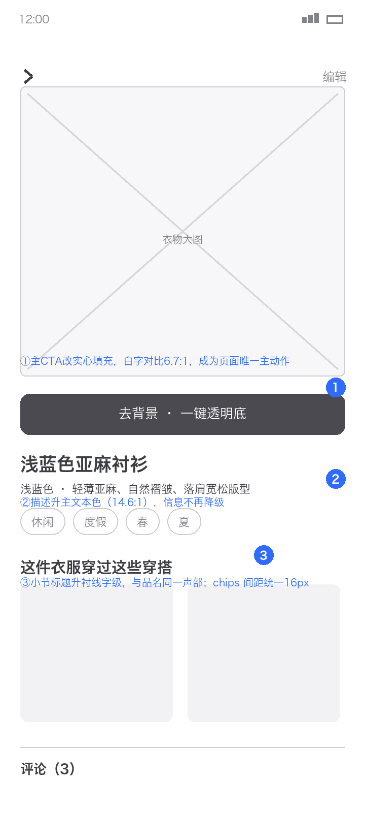
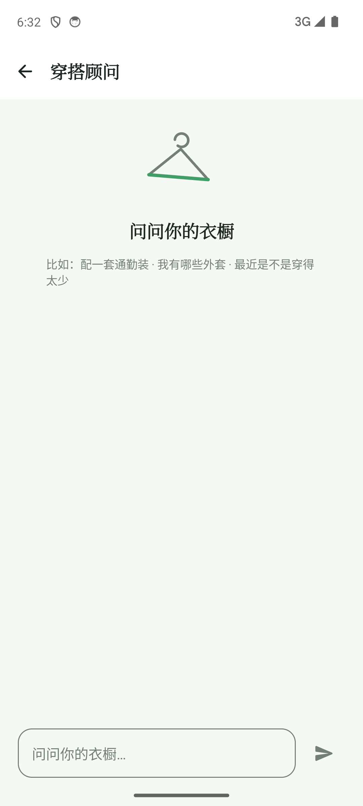
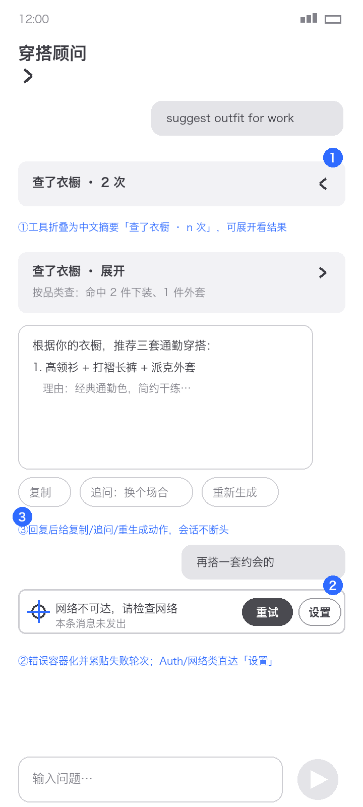
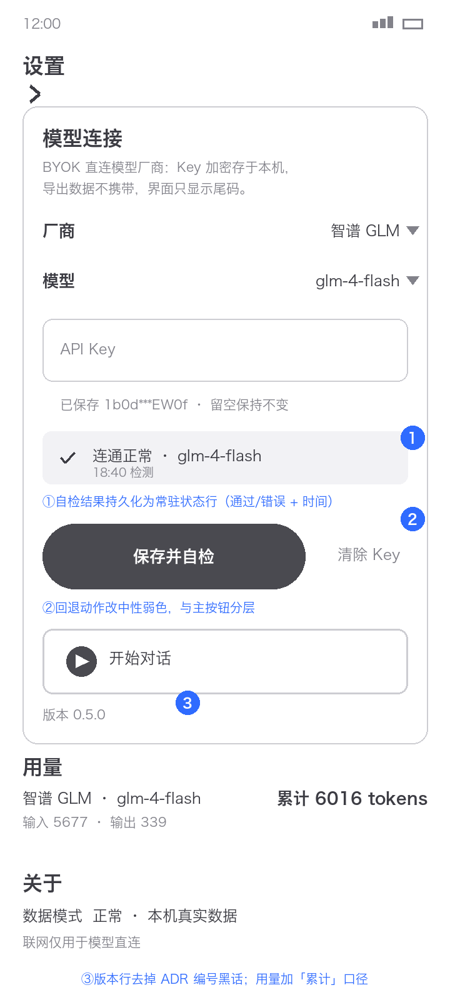
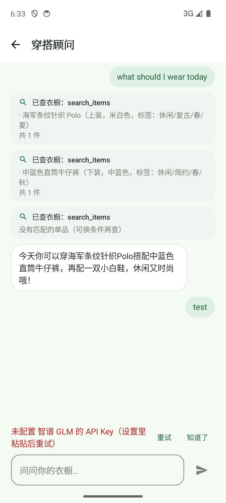

对 it-040/it-041 刚落地的 W11 设置页、W12 对话页与 W5 补抠状态条共 10 个状态进行实机截图走查与 13 项交互实测，汇总为按严重度分级的问题清单（P0×0 / P1×7 / P2×14），并给出 4 组灰盒改版线框：蓝色数字徽标对应右侧改版要点。
emulator-5554 最新构建（9b63b48），逐状态导航采集 10 张 1080×2400 截图，演示/正常双模式覆盖空态、流式、错误、候选、已抠等过程态
对 10 页按「时装编辑 print」风格轴逐页评审 P0/P1/P2，再经仓库标准校准：热区实测、对比度按 inkFaint≥3:1 口径复核定级
13 项 uiautomator/源码断言（E1–E13）：含杀进程续聊、自检成功/401 失败、补抠四态、alpha 检测 36 图 ground truth 交叉核对
| # | 问题 | 涉及页面 | 级别 | 修法（对应线框） |
|---|---|---|---|---|
| C1 | 关键指引误用弱文本 token（hint/主 CTA/工具正文用 inkFaint；数值达 3:1 但语义应为 ink） | W5 · W12 · W11 | P1 | 指引与主动作文案改 ink；次要说明保留 inkFaint（W5-A ② · W12-A ②） |
| C2 | W12 会话列顶部锚定，最新内容与输入栏之间 785–1481px 空洞 | W12 三态 | P1 | 底部锚定/可靠跟随最新，空态垂直居中（W12-A ①） |
| C3 | 技术词汇外泄：raw 工具名、ADR-024、调试式结果文本 | W11 · W12 | P1 | 工具条中文化折叠；版本行去 ADR 编号（W12-B ① · W11-A ③） |
| C4 | 错误/状态语言两套：W12 裸红字 vs W5 容器状态带；错误距失败轮次远、无去设置 | W12-07 vs W5 | P1 | 错误容器化紧贴轮次 + 直达设置（W12-B ②） |
| C5 | 主 CTA 幽灵态（描边+弱灰字低于品名权重） | W5-08 | P1 | 实心填充高对比（W5-A ①） |
| C6 | 自检结果不持久，重进无法判断 Key 可用性 | W11-01 | P1 | 常驻状态行含时间戳（W11-A ①） |
| C7 | 候选态状态带对比 1.07 几乎不可见，且无放大核对边缘入口 | W5-09 | P1 | 状态带加 hairline/抬对比；大图可放大核对 |

核心动作「去背景」以幽灵按钮呈现，视觉重量低于品名——最重要操作像说明文字。


空态顶置导致 1300px+ 空洞，示例引导是不可点的弱灰文本。

工具调用以 raw 英文名+调试文本平铺，错误是距失败轮次半屏远的裸红字。

设置页没有常驻自检状态，用户无法知道当前 Key 是否可用；版本行外泄 ADR 编号。

按仓库迭代流程确认后动工；先修共性问题（功能在但用户够不着/猜不到），再修各 App 核心体验。
| 线框 | 内容 | 对应 |
|---|---|---|
| O1 | W5 主 CTA 实心化 + 描述升主文本 + 状态带容器统一（跨原图/候选/已抠三态） | W5-A · C1 · C5 |
| O2 | W12 空态垂直居中 + 示例可点 chip + 会话底部锚定（修自动滚动竞态） | W12-A · C1 · C2 |
| O3 | 工具条中文折叠摘要 + 错误容器化紧贴失败轮次 + 网络/Key 类直达「设置」 | W12-B · C3 · C4 |
| O4 | W11 自检结果持久化状态行 + 版本行去 ADR 黑话 + 回退动作分色 | W11-A · C6 · C3 |
| 线框 | 内容 | 对应 |
|---|---|---|
| O5 | 右缘对齐线、W5 图区内边距单值、chips 间距统一 | C9 |
| O6 | 回复气泡动作行（复制/追问/重生成）+ IME 回车与应用内发送统一 | C11 |
| O7 | 字体声部与用量口径写入 05-design-system；候选态说明棋盘=透明底 | C10 · W5-09 |
| 项目 | 结论 |
|---|---|
| E1 导航 | ✓ W3 ⚙ → W11，白顶栏沉浸，结构齐 |
| E2 用量 | ✓ 对话后 3508 → 6016 tokens 实时更新 |
| E3 Key mask | ✓ 1b0d***EW0f；全仓无明文 Key |
| E4/E5 自检 | ✓ 连通正常·glm-4-flash；[401] 透传 |
| E6 空态 | ✓ 清会话后 EmptyState + 示例 hint |
| E7 工具链 | ✓ 4 轮 search_items，回复引用真实单品 |
| E8 续聊 | ✓ force-stop 后历史完整恢复（US-41c） |
| E9 错误横幅 | ✓ 分类红字 + 重试/知道了 |
| E10 补抠四态 | ✓ 棋盘格 46,268px 指纹 + 还原可逆 |
| E11 alpha 检测 | ✓ 36 图 ground truth 全一致 |
| E13 热区 | ✓ 关键按钮实测全 48dp |
